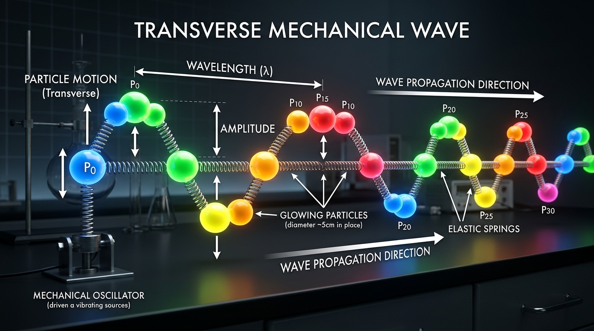
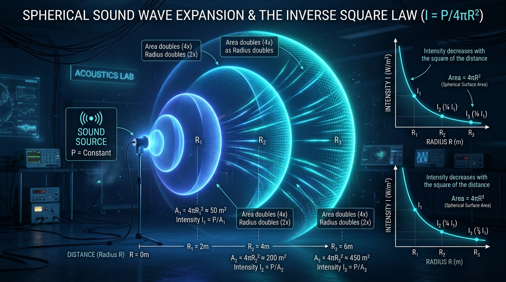
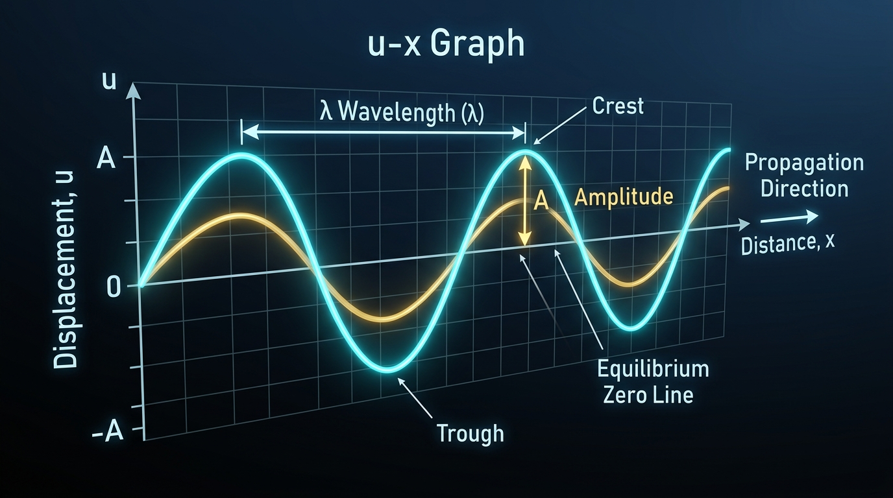
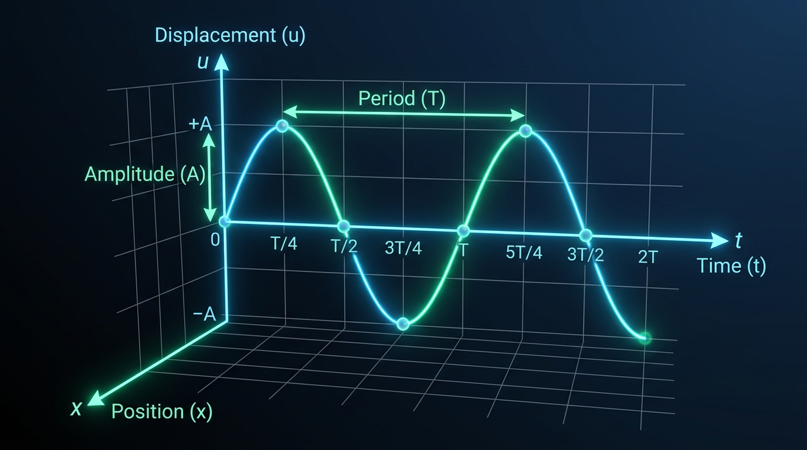
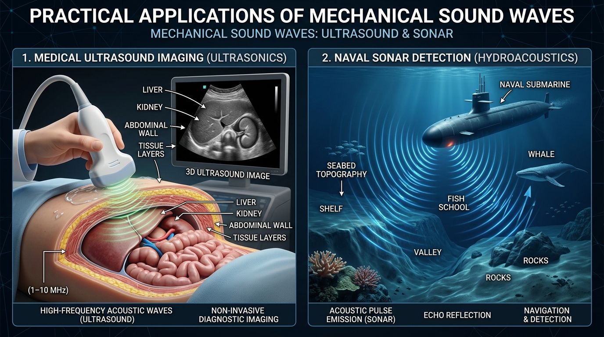

BÀI 8: MÔ TẢ SÓNG
1. Giải thích sự tạo thành sóng
a) Thí nghiệm quan sát sự tạo thành sóng:
- Sóng trên mặt nước: Dùng một cần rung chạm nhẹ vào mặt nước phẳng lặng tại điểm $O$, trên mặt nước xuất hiện các gợn sóng tròn đồng tâm lan rộng dần ra xa. Đặt một chiếc phao nhỏ trên mặt nước, ta thấy phao chỉ dao động nhấp nhô lên xuống tại chỗ quanh một vị trí cân bằng cố định chứ không bị sóng cuốn trôi tịnh tiến theo phương truyền sóng.
- Sóng trên sợi dây đàn hồi: Cầm một đầu sợi dây mềm dài căng ngang và giật nhẹ tay lên xuống, một biến dạng hình sin được tạo ra và truyền dọc theo sợi dây sang đầu bên kia.
b) Định nghĩa sóng cơ học:
Sóng cơ là sự lan truyền dao động cơ trong môi trường vật chất đàn hồi theo thời gian.
c) Bản chất của quá trình truyền sóng:
- Cơ chế truyền sóng vi mô: Môi trường vật chất cấu tạo từ các phân tử liên kết đàn hồi với nhau. Khi nguồn dao động, phần tử môi trường tại nguồn chuyển động kéo theo các phần tử lân cận dao động theo với độ trễ thời gian nhất định.
- Sự truyền trạng thái và pha dao động: Thứ lan truyền trong không gian là trạng thái dao động (pha dao động) và năng lượng. Các phần tử của môi trường chỉ dao động quanh vị trí cân bằng cố định của chúng, không chuyển động tịnh tiến theo sóng.
- Môi trường truyền sóng: Sóng cơ cần môi trường vật chất đàn hồi (chất rắn, chất lỏng, chất khí) để truyền dao động, do đó sóng cơ không truyền được trong chân không.

2. Các đại lượng đặc trưng của sóng
| Đại lượng đặc trưng | Kí hiệu & Đơn vị | Bản chất vật lí & Công thức |
|---|---|---|
| Biên độ sóng | $A$ ($\text{m}, \text{cm}$) | Độ lệch cực đại của phần tử môi trường khỏi vị trí cân bằng. Trong môi trường đồng tính không hấp thụ năng lượng, biên độ sóng coi như không đổi. |
| Chu kì và Tần số sóng | $T$ ($\text{s}$), $f$ ($\text{Hz}$) ($f = 1/T$) |
Chu kì và tần số của sóng bằng chu kì và tần số dao động của nguồn sóng và của mỗi phần tử môi trường nơi sóng truyền qua. Khi sóng truyền qua các môi trường khác nhau, tần số $f$ và chu kì $T$ luôn không đổi. |
| Tốc độ truyền sóng | $v$ ($\text{m/s}$) | Tốc độ lan truyền pha dao động trong môi trường: $v = \frac{s}{t}$. Phụ thuộc vào bản chất đàn hồi, mật độ vật chất và nhiệt độ môi trường ($v_{\text{rắn}} > v_{\text{lỏng}} > v_{\text{khí}}$), không phụ thuộc vào tần số hay biên độ sóng. |
| Bước sóng | $\lambda$ ($\text{m}, \text{cm}$) | Quãng đường sóng truyền đi được trong một chu kì dao động: $$\mathbf{\lambda = v \cdot T = \frac{v}{f}}$$ Đồng thời là khoảng cách ngắn nhất giữa hai điểm trên cùng một phương truyền sóng dao động cùng pha. |
3. Cường độ sóng và sự truyền năng lượng
Quá trình truyền sóng là quá trình truyền năng lượng từ nguồn sóng đến các phần tử môi trường trong không gian.
a) Định nghĩa cường độ sóng:
Cường độ sóng ($I$) là năng lượng sóng truyền qua một đơn vị diện tích đặt vuông góc với phương truyền sóng trong một đơn vị thời gian.
$$I = \frac{E}{S \cdot t} = \frac{\mathcal{P}}{S}$$Trong đó: $\mathcal{P} = \frac{E}{t}$ là công suất phát sóng của nguồn ($\text{W}$); $S$ là diện tích mặt sóng vuông góc ($\text{m}^2$); $I$ có đơn vị là oát trên mét vuông ($\text{W/m}^2$).
b) Sự giảm cường độ sóng khi truyền lan trong không gian (Sóng cầu):
Đối với một nguồn sóng điểm phát sóng đẳng hướng trong không gian 3 chiều không hấp thụ năng lượng, năng lượng phân bố đều trên mặt cầu diện tích $S = 4\pi R^2$. Cường độ sóng tại điểm cách nguồn khoảng $R$ tỉ lệ nghịch với bình phương khoảng cách $R$:
$$I = \frac{\mathcal{P}}{4\pi R^2} \implies \frac{I_1}{I_2} = \left(\frac{R_2}{R_1}\right)^2$$
4. Phương trình sóng và độ lệch pha
Giả sử nguồn sóng tại gốc tọa độ $O$ dao động điều hòa theo phương thẳng đứng với phương trình:
$$u_O(t) = A\cos(\omega t + \varphi_0)$$Sóng lan truyền dọc theo trục $Ox$ với tốc độ không đổi $v$. Dao động tại điểm $M$ cách $O$ một khoảng $x$ trên phương truyền sóng sẽ nhận được pha dao động muộn hơn nguồn $O$ một khoảng thời gian $\Delta t = \frac{x}{v}$.
Phương trình sóng tại điểm $M$ cách nguồn khoảng $x$:
$$u_M(t) = A\cos\left[\omega\left(t - \frac{x}{v}\right) + \varphi_0\right] = \mathbf{A\cos\left(\omega t - \frac{2\pi x}{\lambda} + \varphi_0\right)}$$Độ lệch pha giữa hai điểm $M$ và $N$ cách nhau một khoảng $d$ dọc theo cùng một phương truyền sóng:
$$\Delta \varphi = \frac{2\pi d}{\lambda} = \frac{2\pi d}{vT} = \frac{2\pi f d}{v}$$Các trường hợp pha đặc biệt:
- Hai điểm dao động cùng pha: $\Delta \varphi = 2k\pi \iff \mathbf{d = k\lambda}$ ($k \in \mathbb{Z}$). Khoảng cách ngắn nhất là $\lambda$.
- Hai điểm dao động ngược pha: $\Delta \varphi = (2k+1)\pi \iff \mathbf{d = (2k+1)\frac{\lambda}{2} = (k+0,5)\lambda}$ ($k \in \mathbb{Z}$). Khoảng cách ngắn nhất là $\frac{\lambda}{2}$.
- Hai điểm dao động vuông pha: $\Delta \varphi = (2k+1)\frac{\pi}{2} \iff \mathbf{d = (2k+1)\frac{\lambda}{4}}$ ($k \in \mathbb{Z}$). Khoảng cách ngắn nhất là $\frac{\lambda}{4}$.
5. Đồ thị sóng
a) Đồ thị li độ – khoảng cách $(u - x)$ (Hình dạng tức thời của sóng):
Tại một thời điểm $t = t_0$ xác định, phương trình sóng biểu diễn sự phụ thuộc của li độ $u$ vào tọa độ vị trí $x$ có dạng hàm hình sin tuần hoàn trong không gian:
$$u(x) = A\cos\left(-\frac{2\pi x}{\lambda} + \Phi_0\right)$$Đồ thị này thể hiện hình dạng thực tế tức thời của toàn bộ môi trường truyền sóng tại thời điểm $t_0$. Khoảng cách giữa hai đỉnh sóng liền kề (hoặc hai đáy sóng liền kề) đo dọc theo trục hoành $Ox$ cho biết bước sóng $\lambda$.

b) Đồ thị li độ – thời gian $(u - t)$ (Dao động của một phần tử môi trường):
Xét một phần tử môi trường tại vị trí $x = x_0$ cố định, li độ của phần tử đó biến thiên điều hòa theo thời gian $t$ theo phương trình:
$$u(t) = A\cos(\omega t + \Phi_1)$$Đồ thị $(u - t)$ mô tả quá trình dao động tại chỗ của phần tử đó. Khoảng thời gian giữa hai lần liên tiếp phần tử đạt cùng trạng thái dao động (giữa hai đỉnh liên tiếp trên trục hoành $Ot$) cho biết chu kì dao động $T$.

6. Ứng dụng thực tiễn của sóng cơ học

Truyền âm thanh và thông tin trong đời sống
Sóng âm phát ra từ dây thanh quản hoặc màng loa lan truyền qua không khí đến màng nhĩ người nghe, cho phép con người giao tiếp và tiếp nhận thông tin từ thế giới xung quanh.
Kỹ thuật siêu âm chẩn đoán y học
Sóng siêu âm (sóng cơ có tần số $f > 20\,000\text{ Hz}$) lan truyền qua các mô và bị phản xạ tại các mặt phân cách có mật độ khác nhau, giúp tái tạo hình ảnh cấu trúc cơ quan nội tạng sắc nét mà không gây hại cho sức khỏe.
Hệ thống định vị thủy âm SONAR dưới đại dương
Sóng âm và siêu âm truyền rất tốt trong môi trường nước biển với tốc độ khoảng $1500\text{ m/s}$, được ứng dụng để đo độ sâu đáy biển, dò tìm luồng cá và dẫn đường cho các tàu ngầm.
7. Các dạng bài tập trọng tâm & Ví dụ mẫu
Ví dụ 1: Một người ngồi câu cá trên bờ hồ quan sát thấy một chiếc phao nổi trên mặt nước nhô lên cao $8$ lần trong khoảng thời gian $14\text{ s}$. Người đó đo được khoảng cách giữa $4$ ngọn sóng nhô cao liên tiếp dọc theo một phương truyền sóng là $4,5\text{ m}$.
a) Tính chu kì $T$ và tần số $f$ của sóng nước.
b) Tính bước sóng $\lambda$ và tốc độ truyền sóng $v$ trên mặt hồ.
Hướng dẫn giải:
• a) Phao nhô lên 8 lần ứng với 7 khoảng thời gian chu kì $T$: $$7T = 14\text{ s} \implies T = \frac{14}{7} = 2,0\text{ s}$$ Tần số của sóng: $f = \frac{1}{T} = \frac{1}{2,0} = 0,5\text{ Hz}$.
• b) Khoảng cách giữa 4 ngọn sóng liên tiếp gồm 3 bước sóng: $$3\lambda = 4,5\text{ m} \implies \lambda = \frac{4,5}{3} = 1,5\text{ m}$$ Tốc độ truyền sóng: $v = \frac{\lambda}{T} = \frac{1,5}{2,0} = 0,75\text{ m/s} = 75\text{ cm/s}$.
Ví dụ 2: Một sóng cơ hình sin lan truyền với tần số $f = 20\text{ Hz}$ và tốc độ $v = 1,2\text{ m/s}$ dọc theo một phương truyền sóng. Hai điểm $M$ và $N$ nằm trên phương truyền sóng cách nhau một đoạn $d = 15\text{ cm}$.
a) Tính bước sóng $\lambda$.
b) Tính độ lệch pha $\Delta \varphi$ giữa hai điểm $M$ và $N$ và cho biết trạng thái dao động của chúng.
Hướng dẫn giải:
• a) Bước sóng: $\lambda = \frac{v}{f} = \frac{120\text{ cm/s}}{20\text{ Hz}} = 6\text{ cm}$.
• b) Độ lệch pha giữa $M$ và $N$: $$\Delta \varphi = \frac{2\pi d}{\lambda} = \frac{2\pi \cdot 15}{6} = 5\pi\text{ rad} = (2 \cdot 2 + 1)\pi\text{ rad}$$ Vì độ lệch pha là một số lẻ lần $\pi$ nên hai điểm $M$ và $N$ dao động ngược pha nhau.
Ví dụ 3: Một sóng âm có tần số $f = 440\text{ Hz}$ truyền từ không khí vào nước. Biết tốc độ truyền âm trong không khí là $v_1 = 340\text{ m/s}$ và trong nước là $v_2 = 1480\text{ m/s}$. Tính bước sóng của sóng âm trong không khí và trong nước.
Hướng dẫn giải:
Khi sóng truyền từ không khí vào nước, tần số $f = 440\text{ Hz}$ không đổi.
• Bước sóng trong không khí: $\lambda_1 = \frac{v_1}{f} = \frac{340}{440} \approx 0,773\text{ m} = 77,3\text{ cm}$.
• Bước sóng trong nước: $\lambda_2 = \frac{v_2}{f} = \frac{1480}{440} \approx 3,364\text{ m}$.
Luyện tập trực tuyến ngay!
Làm bài tập trắc nghiệm trực tuyến 3 phần để củng cố toàn diện kiến thức Bài 8 Mô tả sóng.
Vào làm bài trắc nghiệm online (20 phút)